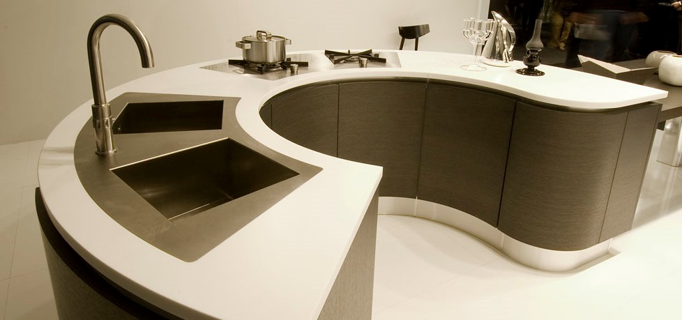
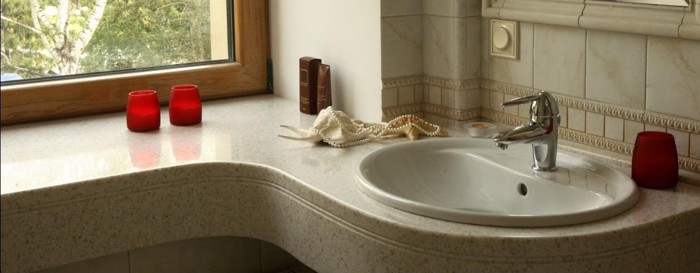
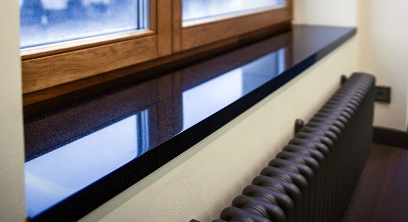
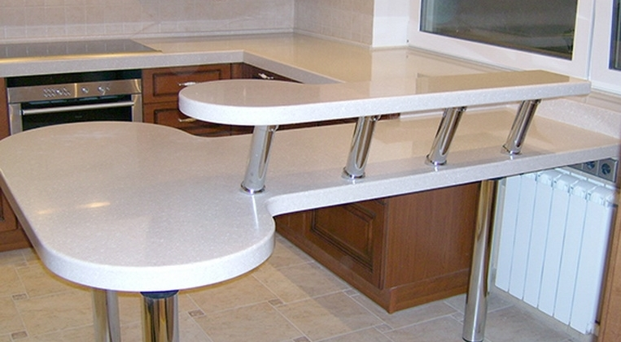
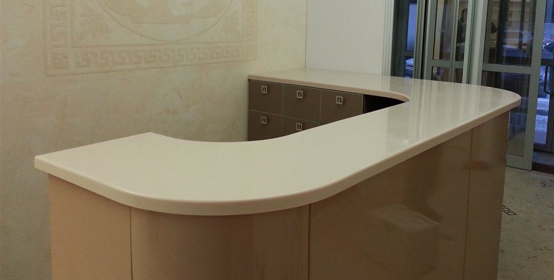

Столешницы для кухни
Искусственный (жидкий) камень превосходный материал для создания многообразных по стилю и функциональности предметов интерьера кухни без ограничений по форме и размеру. Большая цветовая гамма расширяет возможность создания оригинальных композиций, а нанесение любого рисунка придаст еще большей оригинальности вашей кухне. Столешница способна выдержать различные нагрузки каждый день и остаться неизменной долгие годы за счет влагостойкости, термостойкости и бесшовной стыковки. Искусственный камень это не только изящное решение для вашего дома, но и практичность, испытанная временем.
Столешницы для ванной комнаты
Столешница из искусственного камня для ванной комнаты будет невероятно выгодным и стильным решением: 100% водостойкость, гигиеничность, теплая поверхность, отсутствие швов и возможность выполнить столешницу с интегрированной раковиной. Столешница-раковина очень прекрасное решение, от традиционных и элитных до самых разнообразных форм и вариантов. Возможность сочетания искусственного камня с различными материалами, такими как стекло или дерево превратят вашу ванную комнату в мечту!
Подоконники
Подоконник из искусственного камня приукрасит любой дизайн квартиры, офиса или загородного дома. Уникальные характеристики таких подоконников - отражение света за счет глянцевой поверхности, стойкость к ультрафиолетовому излучению, экологичность, долговечность и многое другое. Использование может быть очень разным, начиная подставкой под цветы и заканчивая подоконником столешницей. Наши изделия это современное решение в оформлении интерьера.
Стойки для бара
Уже давно дизайн интерьера перешел на новую ступень и сегодня барные стойки привычны не только для кафе или ресторана, но и для домашних кухонь. Конструкции стоек для бара из искусственного камня очень удобны, современны и функциональны. Вариантов использования безгранично много в любых направлениях и стилях. Наша фирма предложит Вам такое разнообразие мебельных решений стойки, которое приведет в восхищение каждого клиента и дополнит самый изысканный дизайн кухни или комнаты.
Стойка ресепшн
Искусственный камень является наиболее популярным для создания ресепшенов, так как поверхность идеально гладкая, теплая и приятна на ощупь, что немаловажно для работающих и клиентов. Стойка ресепшн - это лицо Вашей фирмы или офиса, которая находится всегда на виду у новых посетителей или постояльцев. Разнообразие форм и размеров расширит круг стилистических решений для вашего интерьера, а также наилучшие эргономические свойства обеспечат максимально комфортные рабочие условия. Отличное дополнение к искусственному камню - использование подсветки или другого материала, как стекла или дерева.
Преимущества работы с нами
- Наши специалисты ответят на все интересующие Вас вопросы, помогут в подборе оптимального цвета и фактуры искусственного камня, а также предложат дизайнерские решения, которые смогут гармонично сочетаться с остальным интерьером.
- Опытные мастера изготовят изделия по Вашим эскизам или дизайн-проектам любой сложности.
- Вы всегда сможете позвонить нашим специалистам и узнать о ходе выполнения Вашего заказа.
- Мы обеспечим доставку изделия по необходимому адресу, а так же произведем установку и монтаж.
- Мы предоставляем гарантию качества на все свои изделия и услуги сроком до 2-х лет.
- Все материалы, из которых производится искусственный камень, подтверждены сертификатами соответствия, подтверждающими об их безопасности для здоровья и окружающей среды.